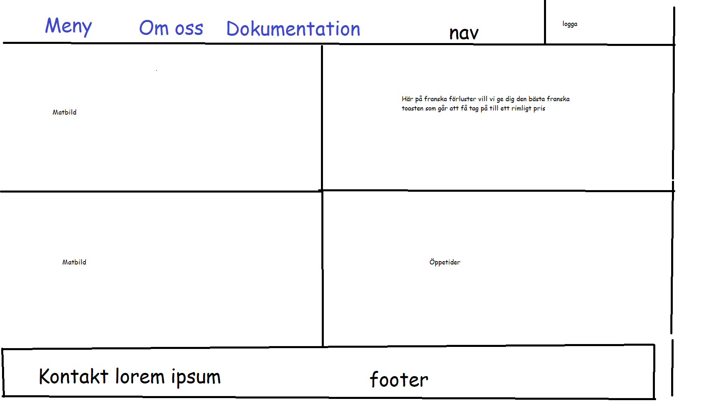

Jag ska göra en hemsida som säljer besegrade fransmän (fattiga riddare fast inte riktigt).
Min målgrupp är mestadels hungriga tyskar.
2. Planering
Skapa en hemsida som säljer besegrade fransmän. Den ska ha en huvudsida, meny, om oss/kontakt info.
Jag ska göra en logga med fattiga riddare och photoshoppa dit en vit flagga och en basker. Möjligtvis något mer.
Implemetera bilderna och jobba på meny.
Göra klart meny.
Fixa om oss sidan.
Finputsa och omptimisera hemsidan.
2.1 Handskiss
Här ser vi min huvud sidas skiss. Jag är ganska nöjd med layouten. För navbaren så ska jag använda nav. För matbilder och liknande ska jag ha divs och för kontakt infon ska jag ha en footer
Jag ska ha 2 kolumner och 4 rader och jag lägger allt i en div

Detta är min meny skiss, jag kommer nog inte använda grid till detta då min kompis sa att det skulle vara svårt.
2.2 Schema
Vecka
På lektionen
Utanför lektionen
4
Skapa en grund för en pizza hemsida för att slippa tänka, som att slags template för nästa vecka.
Det jag inte gjorde klart på lektionen. Förhoppningsvis inte så mycket.
5
Styla hemsidan efter behag.
Det jag inte gjorde klart på lektionen. Förhoppningsvis inte så mycket.
6
Antagligen göra loggan.
Kanske finputsa loggan.
7
Omarbeta hemsidan till att passa de hungriga tyskarna.
Det jag inte gjorde klart på lektionen. Förhoppningsvis inte så mycket.
8
Finputsa allting och implemetera de sista delarna
Allt jag inte blir klar med
9
10
11
12
3. Dokumentation
Jag gjorde dokumentationen och skapade grund fil strukturen och gjorde en av skisserna. Jag kan inte säga att något gick dåligt, jag har lite svårt att tänka hur jag vill ha sidan så det var lite svårt men annars gick allt bra.
Lektion vecka 4
Jag gjorde skissen för huvud sidan.
Jag gjorde en simpel grid på huvud sidan och jag hade först väldigt mycket problem och jag kunde inte hitta felet i css filen. Till slut märkte jag att jag inte hade länkat till den...
Det kommer jag förhoppningsvis aldrig glömma igen, så det ska jag tänka på. Men när jag länkade till css dokumentet så gick resten som smort.
Jag arbetade en del på menyn och jag använde block display vilket var kul, ska nog fortsätta med det nästa gång också.